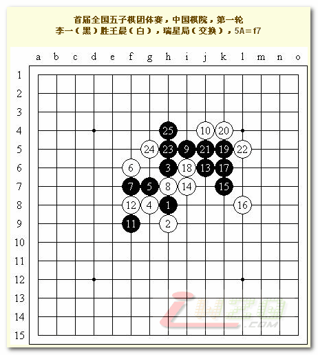
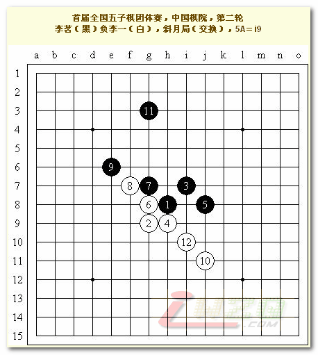
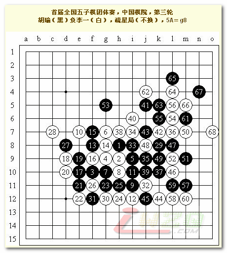
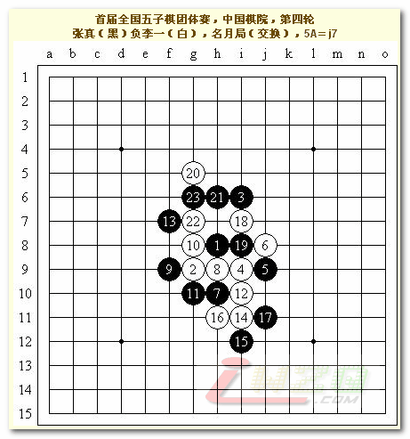
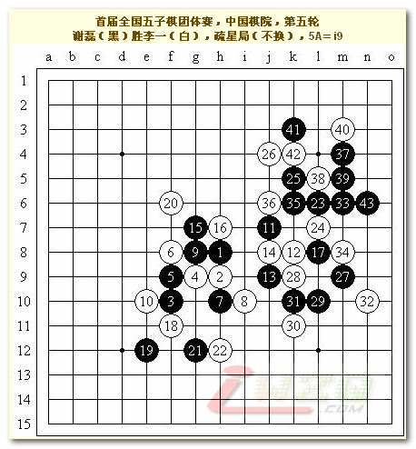
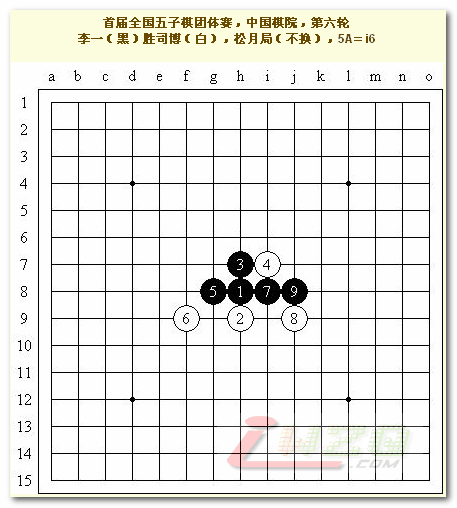
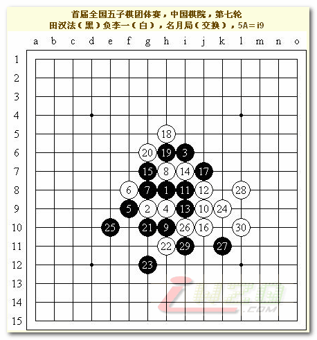
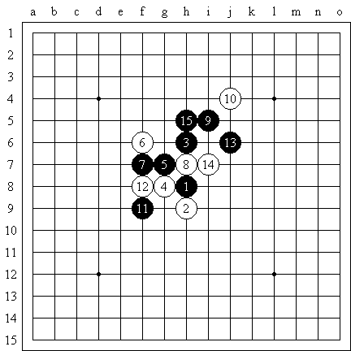

首届全国五子棋团体赛中的自战棋枰
#1 首届全国五子棋团体赛中的自战棋枰 作者：有志青年 发表时间：2007-5-5 9:04:03
原文地址：http://hi.baidu.com/%C6%C1%B1%CE/blog/item/cf7863d9fe3b87e839012f85.html
三天的比赛结束了，我们取得7战4胜3负的成绩。因小分过低名列第十，还好大家都很努力，我们也没有什么遗憾，最终不还是混了一个精神文明奖呢吗？
我虽然取得六胜一负的战绩，但因为团体分太低，在最佳一台的评选中没拼过第二届全国赛冠军李睿凡老师，但没什么，一台应该要能将队伍引领向一个更好的团体名次，在这一点上李睿凡老师所在的河北金环钢构代表队取得了第二名，自然是我学习的榜样。因此，我认为裁判组对于最佳台次的评选办法补充是合理的。但团体名次我还是有些不解——团体赛的话大分比完难道不应该比小分吗？河北金环钢构理应是第一名，而我们队在5个4分的队伍中小分可是以16.5排在第一位的！为什么直接跳过这一项而选择比较对手分呢？郁闷中……能够取得这么高的小分，我当然要感谢我的队友张弛、孙羽浩和张诗佳，即使在我输棋的第五轮，他们依然努力拿下了1.5分！这七轮比赛，我们始终坚持着，从未被其他队伍刷成4：0，每轮都至少得了1分，甚至是在对阵强大的北京联合队时！这与我们全体队员的努力是分不开的！
明年我当然不可能再代表我们学校来比赛了，还是希望他们能够取得好成绩吧！不排除我和他们较量的可能性……我明年会加入哪个队伍呢？……北京联合队吧？哈哈哈～
整个比赛组织得很好，开幕式和闭幕式很有sense，闭幕式上杨采奕老师的一番话发自肺腑，让我们在这条路上继续勇敢地前进着。
以下是我这次比赛中全部七轮对局的棋评：

本想骗黑5的必败，不料白4转为金星黑优局。6手强防，我不会定式了，其实应该7－12直接活三转化为寒星必胜定式。实战7手稳定局势，8可以预见，9手！10若逆止，则11－13直接做出大优棋型，实战中10－10，11做VCT，12无奈回防，13再一子通三路，14也基本上是最强防。15？我太急躁了，16－25白棋将有强烈反击！可惜对手错过了唯一的机会，17手后黑必胜。

这孩子很激动，真的很激动……黑5不给两打就拍钟，还好我没有直接应对，因为我本来就想留下一打的……结果不料他不会两打……6手后黑棋无防。

14手不好，14－15最佳！以下黑棋主动。18、20无奈，以下变化至31手黑棋大优，32尽力防守，可惜33手～39手进攻不利，46手后黑棋被动。54手后白优，55弱防？57布下陷阱！58稳健。以下黑棋难防。62手后白棋有VCF。

本想考对手黑5的复杂必胜，不料对手明智地选择了实战黑优势的5。9－10最强。13－17的话，14－18白棋有优势。实战13正确！14是临场想出的变化，以下15－19，16－23白棋顽强防守。可惜15－15？黑棋在白棋下面的优势压迫下走出错着！16争先后简单抓禁。

实战的黑5我比较熟悉，也很少在这个局面上失利。15奇怪，变化至17后白棋有先手，18！19～22之后白棋在左上和下方都有难以遏制的优势，黑棋只得强攻！23、25好形，27连通上下，29稳健！33后黑必胜！白棋防守不利，黑棋进攻精彩！

使用松月局，本想对手交换后变云月，给一个黑5必胜的白6复杂强防，不料对方竟然走了我的思路，并且白6弱。黑7后应该可以追胜，不料……就这么赢了。

再次选择名月局，这个白6我在与宋霰的对局时使用过，效果不错。田老师的黑7也没有走对。9手后10手强！黑白混战、以下交换至20正常变化。21手？22反击，本想黑棋防守后在左上方有所作为，不料23－23！24强手！黑棋陷入骑虎难下的境地，防守困难，又攻不出来。25选择强攻！26争先后黑棋速败。
小小结论：凡我开局时均轻松取胜（见2、4、6、7局），对手开局时我均有苦战，甚至还会输棋（见1、3、5局），诶……
#2 Re:首届全国五子棋团体赛中的自战棋枰 作者：屏蔽 发表时间：2007-5-5 9:52:30
第五轮那个是我弄错了，应该是长星开局，我转的疏星。#3 Re:Re:首届全国五子棋团体赛中的自战棋枰 作者：有志青年 发表时间：2007-5-5 9:56:12
引用：
原文由 屏蔽 发表于 2007-5-5 9:52:30 :
第五轮那个是我弄错了，应该是长星开局，我转的疏星。
 是棋谱错了？
是棋谱错了？
#4 Re:首届全国五子棋团体赛中的自战棋枰 作者：屏蔽 发表时间：2007-5-5 10:00:57
呃……我往我空间里面传的时候没仔细看谱，后来才发现是长星开局。
没关系，无关大局。
#5 Re:首届全国五子棋团体赛中的自战棋枰 作者：gerbo 发表时间：2007-5-5 18:20:59
 没有看到你跟高飞的比赛，遗憾啊～～
没有看到你跟高飞的比赛，遗憾啊～～
#6 Re:首届全国五子棋团体赛中的自战棋枰 作者：无尽 发表时间：2007-5-5 22:44:53
高飞？？？
#7 Re:首届全国五子棋团体赛中的自战棋枰 作者：屏蔽 发表时间：2007-5-6 0:00:52
指的是QQGame里面的高飞啦，艾显平。湖北没派队来。#8 Re:首届全国五子棋团体赛中的自战棋枰 作者：无尽 发表时间：2007-5-6 7:53:03
我是想他是不是把艾永乐当高飞了，呵呵#9 Re:Re:首届全国五子棋团体赛中的自战棋枰 作者：江南新绿 发表时间：2007-5-6 11:22:36

第一局，实战7手应该是简明必胜。如果7=12转为寒星则会很复杂，实战能够全部走比较有难度。以下8-13都不错，15手活三不好，团一下最强。
#10 Re:首届全国五子棋团体赛中的自战棋枰 作者：菏香袭幽梦 发表时间：2007-5-6 16:53:22
不是吧,我们家客客跟高飞那头,差的远了去了,怎么会弄混,我们家客客超级无敌好人的!!!!!